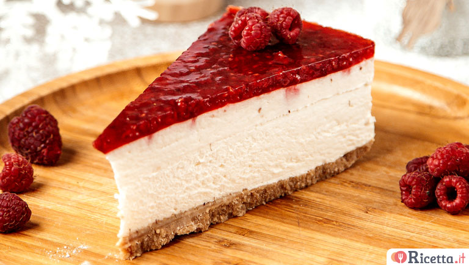

Cheesecake

Una friabile base di biscotti e burro, sormontata da una ricca crema al formaggio
In questa ricetta vi mostriamo quella che per noi è la cheesecake con la "C" maiuscola!
Ingredienti:
- Burro, 110g
- Biscotti, 240g
- Formaggio fresco spalmabile, 500g
- Zucchero, 50g
- Amido di mais, 25g
- Tuorli, 1
- Uova, 1
Procedimento:
- fondete il burro e lasciatelo intiepidire
- ponete i biscotti in un mixer e frullateli fino a ridurli in polvere. Poi trasferiteli in una ciotola e versate il burro.
- prendete uno stampo a cerniera da 22 cm e foderate la base con la carta forno. Ponete i biscotti all'interno e schiacciateli con il dorso del cucchiaio per compattarli
- Non appena avrete ricoperto l'intera superficie ponete la base della vostra cheesecake a rassodare in frigo
- in una ciotola versate un uovo, un tuorlo, lo zucchero e sbattete il tutto con una frusta fino ad ottenere una consistenza cremosa
- Unite il formaggio cremoso poco per volta, la vaniglia, l'amido e il succo di mezzo limone
- Unite poi la panna e mescolate ancora delicatamente con la frusta
- Riprendete dal frigorifero lo stampo con la base di biscotti e versate il composto all'interno
- Livellate leggermente la superficie e cuocete in forno statico preriscaldato a 160° per 60 minuti, poi proseguite la cottura a 170° per altri 20 minuti
Back to the Recipes